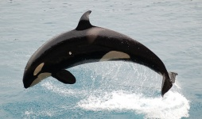
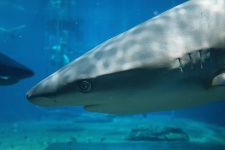
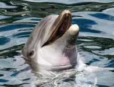
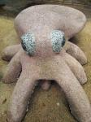

Whales are some of the largest living animals. They
live in the ocean, having fully adapted to living
in the water. They are mammals!

Sharks are known for being apex predators, but some
sharks only eat small fish. Sharks teeth never stop
growing, with old ones constantly falling out and
being replaced by new teeth.

Dolphins are highly intelligent animals, demonstrated by their
curiosity and complex social structure. Although they
live in the ocean, they breathe air. Lucky for them, they
can hold their breath for up to 15 minutes.

Octopuses are also very intelligent animals. There are several
cases of octopuses escaping from aquariums. They are able
to change the color and even the texture of their skin at will!